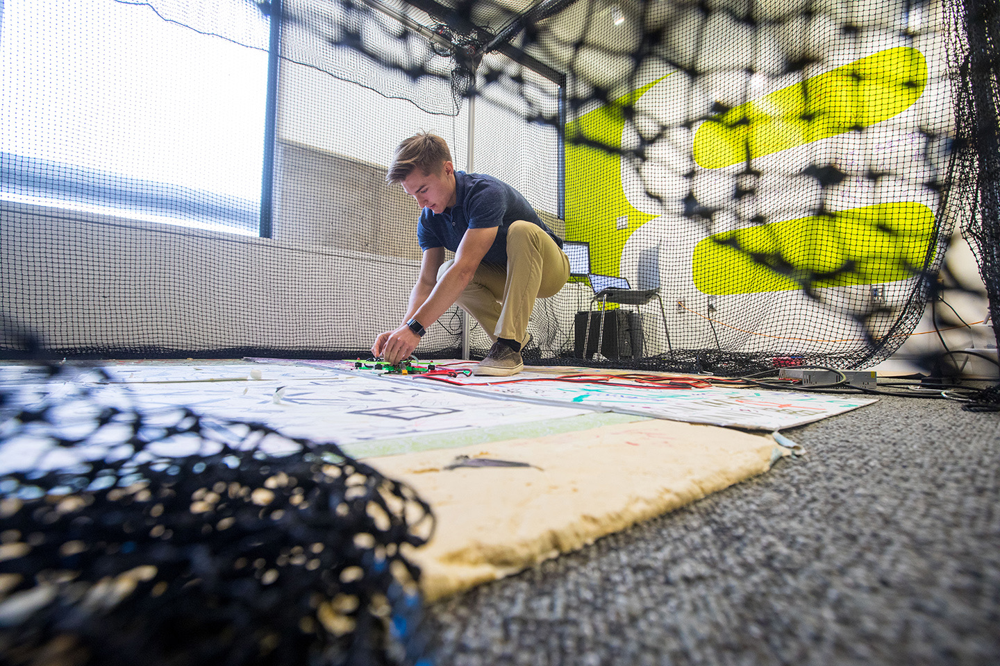
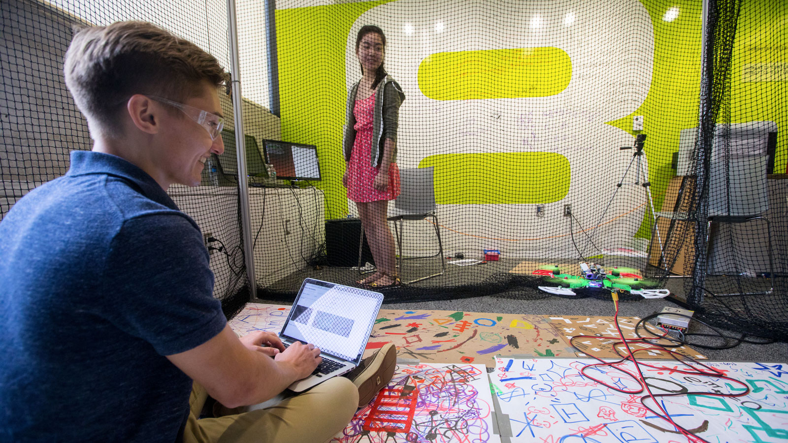
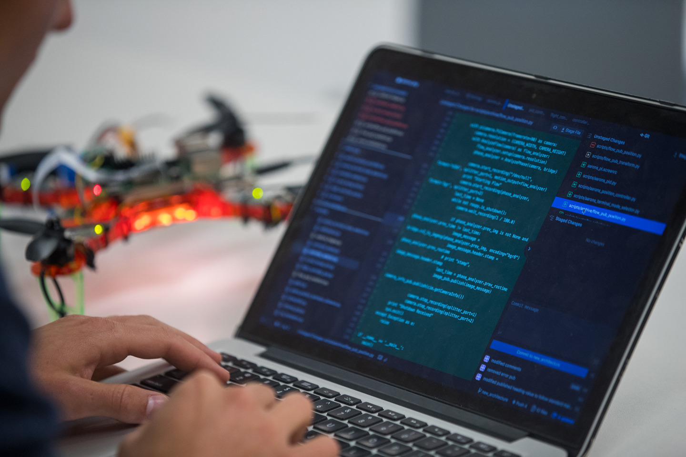
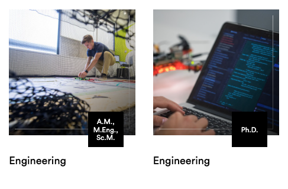

PiDrone
PiDrone is the quadcopter students build from a kit and program to fly on their own in Brown's intro robotics course, taught by Stefanie Tellex. Its brain is a Raspberry Pi running ROS, with a downward-facing camera, a range sensor and an IMU.
In summer 2018 I was one of four undergraduates on a research team (funded by a Karen T. Romer UTRA) that took the first version of the course and rebuilt it. We extended the drone's capabilities and reworked the assignments based on feedback from the first class. The core of it was autonomy that runs entirely onboard, in Python: an Unscented Kalman Filter that turns noisy sensor data into an accurate state estimate, plus Monte Carlo localization and FastSLAM so the drone can map a room and know where it is in it.
We tested each piece against motion-capture ground truth and published the framework as Advanced Autonomy on a Low-Cost Educational Drone Platform, which I presented at IROS 2019 in Macau. Brown News covered the project that summer.
I also helped write the original Duckiesky curriculum, which brought the drone to high school students: build guides, lessons on sensing, and lesson plans for the teachers running it.
Photos: Nick Dentamaro / Brown University.



